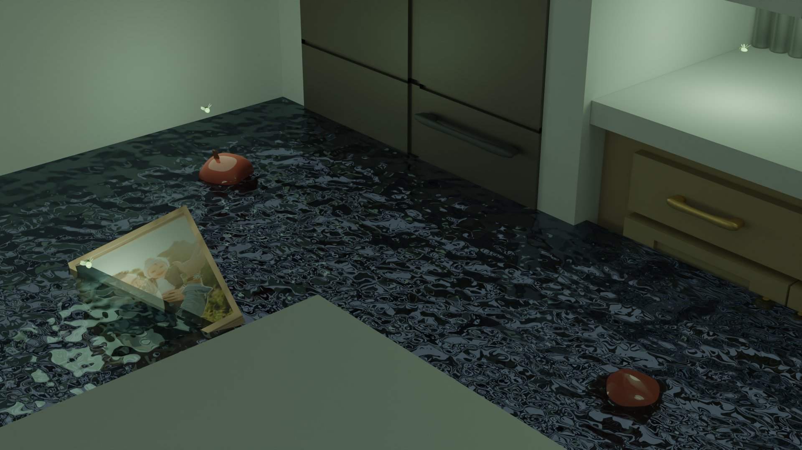
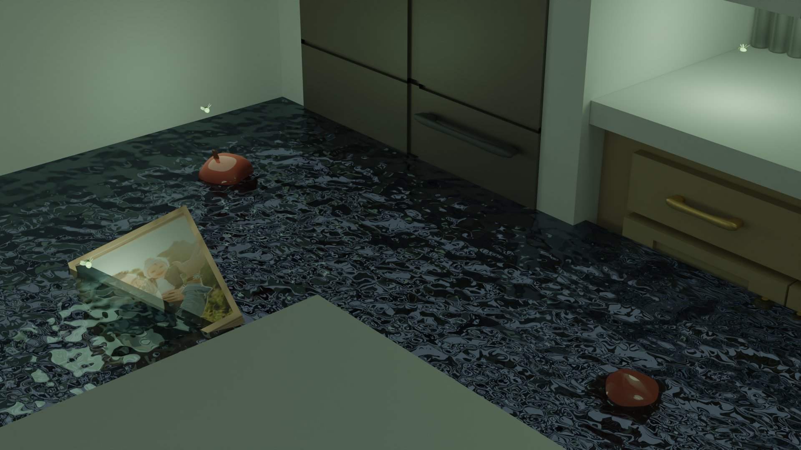

Post-disaster

 

Description
On March 11th, 2011 at Japan, a 9.0-9.1 undersea megathrust earthquake occurred in the Pacific Ocean caused a huge tsunami. I was 10 years old when I heard the news and it's hard to forget. The scene is based on post-tsunami, where flooding stopped. I imagined a kitchen in a family house is flooded and how the people were desperate. In my heart, I deeply hope people got rescure from this disaster and the fireflies represents hope in the dark times.